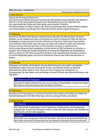
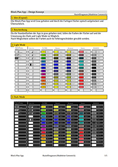

Konzepte
Hier kommen Beispiele für mein Konzept hin.
Block Plan App
Hier sind die drei Konzepte für die Block Plan App zu finden. Einmal das Grobkonzept, das Feinkonzept und das Designkonzept.
 
Polynesia
Polynesia war wieder einmal eine Gruppenarbeit in der Schule. Ich habe aber hier das Konzept hochgeladen, welches ich geschrieben habe. Dies wurde so nicht in der Gruppenarbeit umgesetzt. Zum Grobkonzept gibgt es noch das Konzept der Marquesa Inseln und der Random Encounter.


Low Poly Idee - Jahresblume
Die Low Poly Idee - Jahresblume, war ein Arbeitsauftrag der Schule. Man sollte eine kleine Low Poly Idee als spielbare Demo umsetzen. Hierzu gibt es auch Screenshots.